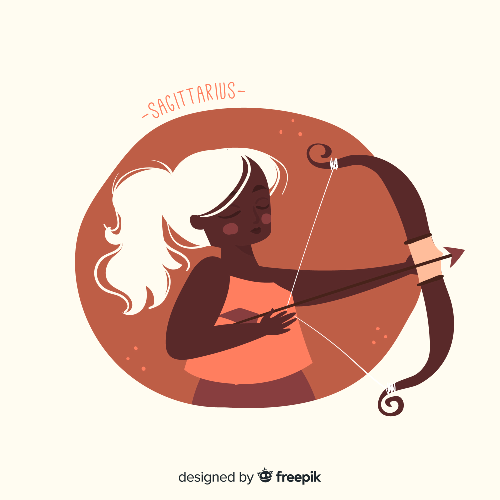

Sagittaire
(22 novembre - 21 décembre)
La manière d’agir d’un enfant (ado ou jeune adulte), d’un proche parent ou d’un frère pourrait vous donner du fil à retordre ou son « repli sur lui-même » vous inquiète sérieusement. Son jugement est altéré par ses peurs. Provoquez des rencontres avec les clients.